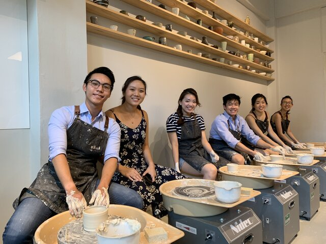

¿Quiénes somos?
Fundado por Mónica Barría, Barro taller © es un taller de artesanías chileno que nace a fines del 2022 como parte del proyecto de vida de Mónica, con el cual se busco dar a conocer nuevas formas y técnicas de creacion a través de materias primas provenientes de la tierra.
Actualmente trabajamos para acercar y concientizar acerca de estas técnicas milenarias a las comunidades.
Queremos impulsar el desarrollo de una economía creativa, diversa y respetuosa con su entorno
“Debemos evaluar nuestros hábitos de consumo y desarrollar una conciencia medioambiental que vaya más allá del reciclaje y la reutilización, una conciencia que nos ayude a entender el valor, materialidad y complejidad de las cosas. Cómo se fabrican, quiénes las fabrican y qué ocurre con ellas cuando ya no las tenemos más.”

Talleres

